import matplotlib.pyplot as plt
import numpy as np라인플랏, 산점도, 여러 그림 그리기, fig와 axes의 이해
강의영상
https://youtube.com/playlist?list=PLQqh36zP38-xX1bzyd7pHlAlCcX3mzja2
오늘 배울 내용?
- 라인플랏과 산점도를 그리는 방법
- 여러 그림그리기 (한 플랏에 그림을 겹치는 방법, subplot을 그리는 방법)
- fig, axes의 개념이해 (객체지향적 프로그래밍)
imports
Line plot
기본플랏
- 예시1
x=[1,2,3,4]
y=[1,2,4,3] plt.plot(x,y)
모양변경
- 예시1
plt.plot(x,y,'--')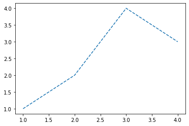
- 예시2
plt.plot(x,y,':')
- 예시3
plt.plot(x,y,'-.')
색상변경
- 예시1
plt.plot(x,y,'r')- 예시2
plt.plot(x,y,'k')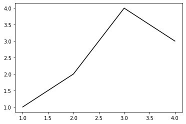
모양 + 색상변경
- 예시1
plt.plot(x,y,'--r')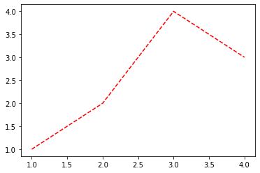
- 예시2: 순서변경 가능
plt.plot(x,y,'r--')
원리?
- r--등의 옵션은 Markers + Line Styles + Colors 의 조합으로 표현가능
ref: https://matplotlib.org/stable/api/_as_gen/matplotlib.pyplot.plot.html
--r: 점선(dashed)스타일 + 빨간색r--: 빨간색 + 점선(dashed)스타일:k: 점선(dotted)스타일 + 검은색k:: 검은색 + 점선(dotted)스타일
- 우선 Marker를 무시하면 Line Styles + Color로 표현가능한 조합은 \(4\times 8=32\) 개
(Line Styles) 모두 4개
| character | description |
|---|---|
| ‘-’ | solid line style |
| ‘–’ | dashed line style |
| ‘-.’ | dash-dot line style |
| ‘:’ | dotted line style |
(Color) 모두 8개
| character | color |
|---|---|
| ‘b’ | blue |
| ‘g’ | green |
| ‘r’ | red |
| ‘c’ | cyan |
| ‘m’ | magenta |
| ‘y’ | yellow |
| ‘k’ | black |
| ‘w’ | white |
- 예시1
plt.plot(x,y,'--m')
- 예시2
plt.plot(x,y,'-.c')
- 예시3: line style + color 조합으로 사용하든 color + line style 조합으로 사용하든 상관없음
plt.plot(x,y,'-.c')
plt.plot(x,y,'c-.')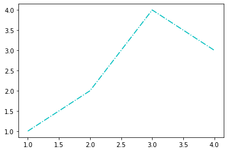
- 예시4: line style을 중복으로 사용하거나 color를 중복으로 쓸 수 는 없다.
plt.plot(x,y,'--:')ValueError: Illegal format string "--:"; two linestyle symbols
plt.plot(x,y,'rb')ValueError: Illegal format string "rb"; two color symbols
- 예시5: 색이 사실 8개만 있는건 아니다.
ref: https://matplotlib.org/2.0.2/examples/color/named_colors.html
plt.plot(x,y,'--',color='lime')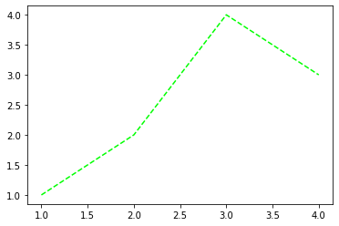
- 예시6: 색을 바꾸려면 Hex코드를 밖아 넣는 방법이 젤 깔끔함
ref: https://htmlcolorcodes.com/
plt.plot(x,y,color='#277E41') 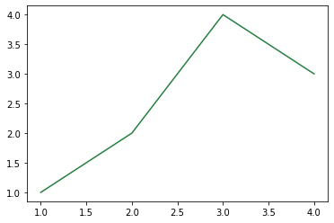
- 예시7: 당연히 라인스타일도 4개만 있진 않겠지
ref: https://matplotlib.org/stable/gallery/lines_bars_and_markers/linestyles.html
plt.plot(x,y,linestyle='dashed')
plt.plot(x,y,linestyle=(0, (20, 5)))
Scatter plot
원리
- 그냥 마커를 설정하면 끝!
ref: https://matplotlib.org/stable/api/_as_gen/matplotlib.pyplot.plot.html
| character | description |
|---|---|
| ‘.’ | point marker |
| ‘,’ | pixel marker |
| ‘o’ | circle marker |
| ‘v’ | triangle_down marker |
| ‘^’ | triangle_up marker |
| ‘<’ | triangle_left marker |
| ‘>’ | triangle_right marker |
| ‘1’ | tri_down marker |
| ‘2’ | tri_up marker |
| ‘3’ | tri_left marker |
| ‘4’ | tri_right marker |
| ‘8’ | octagon marker |
| ‘s’ | square marker |
| ‘p’ | pentagon marker |
| ‘P’ | plus (filled) marker |
| ’*’ | star marker |
| ‘h’ | hexagon1 marker |
| ‘H’ | hexagon2 marker |
| ‘+’ | plus marker |
| ‘x’ | x marker |
| ‘X’ | x (filled) marker |
| ‘D’ | diamond marker |
| ‘d’ | thin_diamond marker |
| ‘|’ | vline marker |
| ’_’ | hline marker |
plt.plot(x,y,'o')
기본플랏
- 예시1
plt.plot(x,y,'.')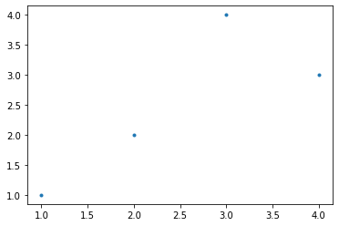
- 예시2
plt.plot(x,y,'x')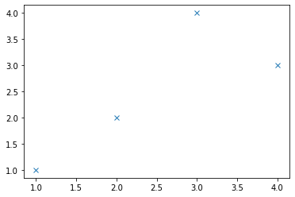
색깔변경
- 예시1
plt.plot(x,y,'or')
- 예시2
plt.plot(x,y,'db')
- 예시3
plt.plot(x,y,'bx')
dot-connected plot
- 예시1: 마커와 라인스타일을 동시에 사용하면 dot-connected plot이 된다.
plt.plot(x,y,'o-')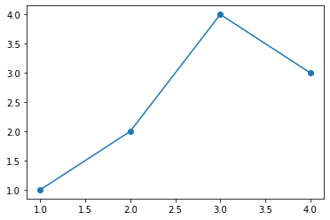
- 예시2: 당연히 색도 적용가능함
plt.plot(x,y,'o--r')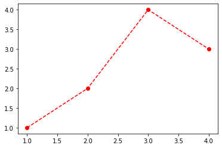
- 예시3: 서로 순서를 바꿔도 상관없다.
plt.plot(x,y,'ro--')
여러 그림 그리기
겹쳐그리기
- 예시1
x = np.arange(-5,5,0.1)
ϵ = np.random.randn(100)
y = 2*x + ϵplt.plot(x,y,'.b')
plt.plot(x,2*x,'r')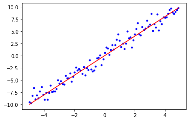
따로그리기 (subplot) // 외우세요 이거
- 예시1
fig, axs = plt.subplots(2)
axs[0].plot(x,y,'.b')
axs[1].plot(x,2*x,'r')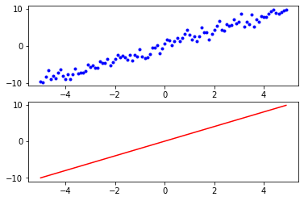
- 예시2
fig, axs = plt.subplots(2,2)
axs[0,0].plot(x,2*x,'--b')
axs[0,1].plot(x,ϵ,'.r')
axs[1,0].plot(x,y,'.r')
axs[1,1].plot(x,y,'.r')
axs[1,1].plot(x,2*x,'-b')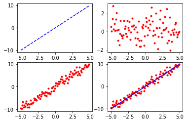
fig와 axes의 이해 : matplotlib으로 어렵게 그림을 그리는 방법
예제1
- 목표: plt.plot()을 이용하지 않고 아래의 그림을 그려보자.
plt.plot([1,2,3,4],[1,2,4,3],'or--')
- 구조: axis \(\subset\) axes \(\subset\) figure
ref: https://matplotlib.org/stable/gallery/showcase/anatomy.html#sphx-glr-gallery-showcase-anatomy-py

- 전략: Fig을 만들고 (도화지를 준비) \(\to\) axes를 만들고 (네모틀) \(\to\) axes에 그림을 그린다.
- 그림객체를 생성한다.
fig = plt.figure()<Figure size 432x288 with 0 Axes>fig # 지금은 아무것도 없다. <Figure size 432x288 with 0 Axes>- 그림객체에는 여러 인스턴스 + 함수가 있는데 그중에서 axes도 있다. (그런데 그와중에 plot method는 없다)
fig.axes # 비어있는 리스트[]- axes 추가
fig.add_axes([0,0,1,1]) # (0,0)의 위치에 (1,1)인 액시즈(=네모틀)을 만들어라. <Axes:>fig.axes[<Axes:>]fig # 도화지안에 네모틀이 들어가 있다. 
- 첫번째 액시즈를 ax1로 받음 (원래 axes1이어야하는데 그냥 편의상)
ax1 = fig.axes[0]id(fig.axes[0]),id(ax1)(139891930961872, 139891930961872)- 잠깐만! (fig 오브젝트와 ax1 오브젝트는 포함관계에 있다)
id(fig.axes[0]),id(ax1)(139891930961872, 139891930961872)- 또 잠깐만! (fig 오브젝트에는 plot이 없지만 ax1 오브젝트에는 plot이 있다)
set(dir(fig)) & {'plot'}set()set(dir(ax1)) & {'plot'}{'plot'}- ax1.plot()을 사용하여 그림을 그려보자.
ax1.plot([1,2,3,4],[1,2,4,3],'--or')fig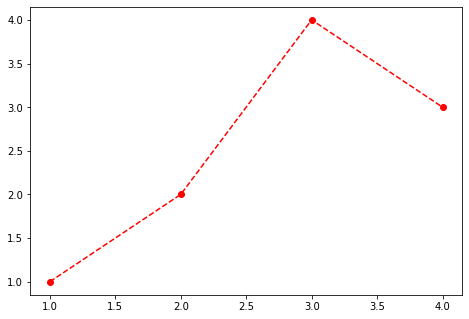
예제2: 예제1의 응용
- 예제1상황
fig
- 여기서 축을 하나 더 추가할거에요
fig.axes[<Axes:>]fig.add_axes([1,1,1,1])<Axes:>fig.axes[<Axes:>, <Axes:>]fig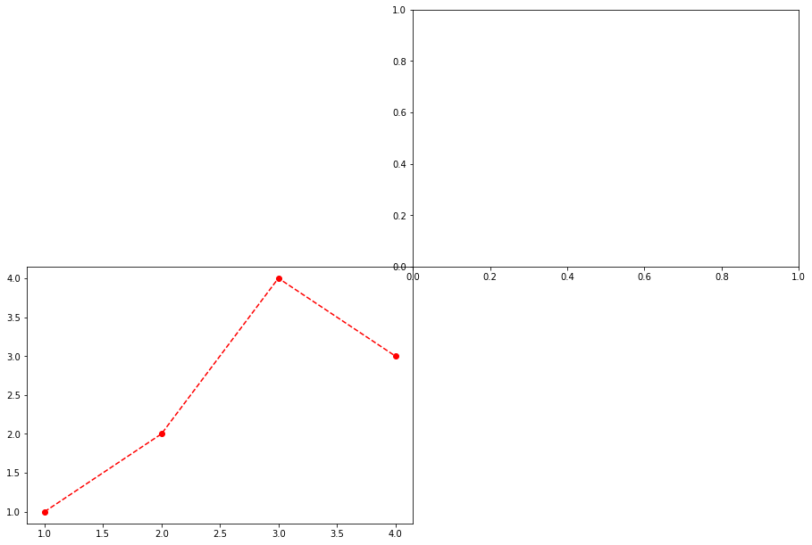
ax1,ax2 = fig.axes- ax2에 파란선으로 그림을 그리자.
ax2.plot([1,2,3,4],[1,2,4,3],'--ob')fig
예제3: 더 응용! (미니맵)
- 지금 상황
fig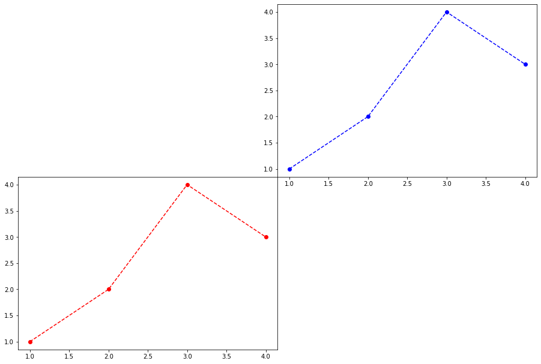
- 액시즈를 하나 더 추가
fig.add_axes([0.65,0.1,0.3,0.3])<Axes:>fig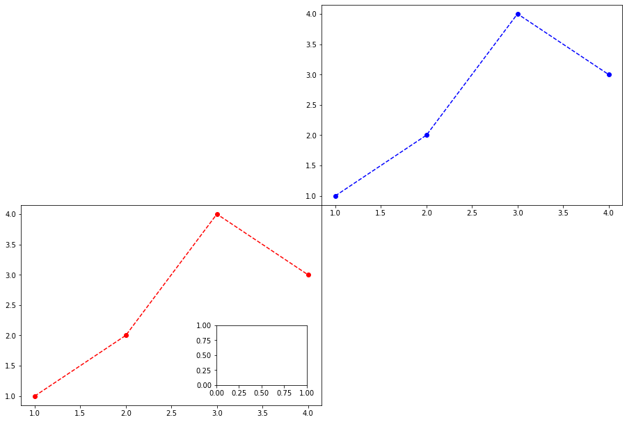
fig.axes[-1].plot([1,2,3,4],[1,2,4,3],'xr')fig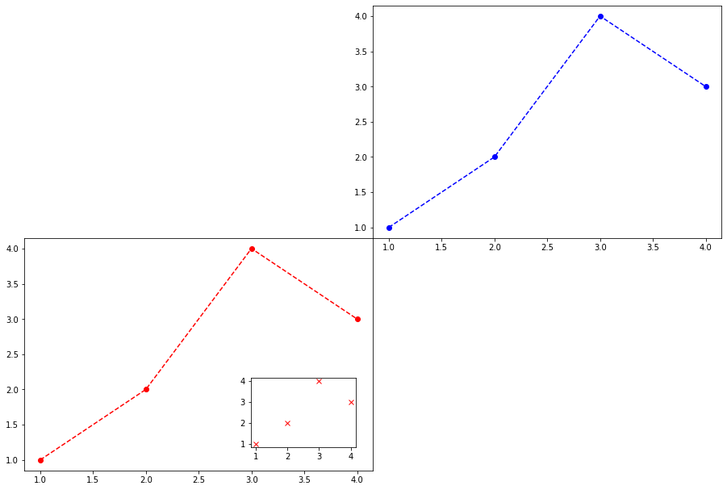
예제4: 재해석1
(ver1)
plt.plot([1,2,3,4],[1,2,4,3])
(ver2)
ver1은 사실 아래가 연속적으로 실행된 축약구문임
fig = plt.figure()
fig.add_axes([?,?,?,?])
ax1 = fig.axes[0]
ax1.plot([1,2,3,4],[1,2,4,3])
fig예제5: 재해석2
- 아래의 코드도 재해석하자.
fig, axs = plt.subplots(2,2)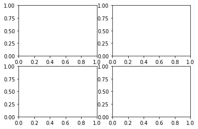
fig, axs = plt.subplots(2,2)
axs[0,0].plot([1,2,3,4],[1,2,4,3],'.')
axs[0,1].plot([1,2,3,4],[1,2,4,3],'--r')
axs[1,0].plot([1,2,3,4],[1,2,4,3],'o--')
axs[1,1].plot([1,2,3,4],[1,2,4,3],'o--',color='lime')
- fig, axs = plt.subplots(2,2)의 축약버전을 이해하면된다.
(ver1)
fig, axs = plt.subplots(2,2)
(ver2)
ver1은 사실 아래의 축약!
fig = plt.figure()
fig.add_axes([?,?,?,?])
fig.add_axes([?,?,?,?])
fig.add_axes([?,?,?,?])
fig.add_axes([?,?,?,?])
ax1,ax2,ax3,ax4 = fig.axes
axs = np.array(((ax1,ax2),(ax3,ax4)))(ver3)
ver1은 아래와 같이 표현할 수도 있다.
fig = plt.figure()
axs = fig.subplots(2,2)HW
제출: 이름(학번).ipynb, 이름(학번).html 형태로 정리하여 2개의 파일을 제출할 것 (작성방법 모르면 아래영상참고할것) - 즉 주피터노트북파일과 html파일을 모두 제출할 것
https://youtube.com/playlist?list=PLQqh36zP38-x3HQLeyrS7GLh70Dv_54Yg
- 영상1: 코랩으로 실습하는 경우
- 영상2: local 아나콘다로 실습하는 경우
1. 아래와 같은 그림을 그려라.
x,y = [1,2,3,4], [1,2,4,3] #
2. 아래와 같은 그림을 그려라.
x,y = [1,2,3,4], [1,2,1,1]#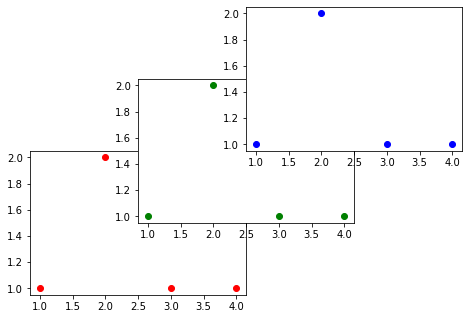
3. 아래와 같은 그림을 그려라.
x = np.arange(-5,5,0.1)
y1 = np.sin(x)
y2 = np.sin(2*x) + 2
y3 = np.sin(4*x) + 4
y4 = np.sin(8*x) + 6#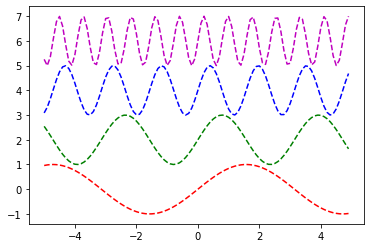